Blockbild-Editor
release 2.2, 19.9.2018
release 1.0,
7.3.2016
entwickelt von
Stefan Egger und Michael Delfser
Inhaltsverzeichnis
Einsatzgebiet........................................................................................................................... 1
Blöcke als Anweisungen....................................................................................................... 2
Grundlegende Anweisungen............................................................................................... 2
Algorithmus........................................................................................................................... 3
Sequenz................................................................................................................................. 3
Alternativen........................................................................................................................... 3
Expressions............................................................................................................................ 4
Iterationen............................................................................................................................. 4
Unterprogramm.................................................................................................................... 6
Arrays..................................................................................................................................... 8
Beispiele................................................................................................................................... 8
Der Blockbild-Editor hilft das Erlernen
der „sauberen“ strukturierten Programmierung. Er lässt sich in nahezu jedem
Browser am tablet, notebook, PC unter Windows, Mac, Linux oder Android
verwenden. Seine einfache Oberfläche umfasst Anweisungen für Declaration,
Input, .., ein Menü mit Load, Save, .., und einen main-Block im Editor:
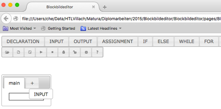
Abbildung
1: Blockbild-Editor als einfach zu
bedienende Web-App
Mit drag’n drop zieht man eine Anweisung als
Block in den Editor, wie zB Input in Abbildung 1. Übers Kontextmenü löscht „delete“ diese
wieder. Das Menü erklärt sich mittels Tool-Tipps selbst. So startet „Play“ das
main Programm. Der Anwender sieht als Animation wie jede einzelne Anweisung die
Daten (am simulierten stack) ändert.
Die Software richtet Anweisungen
(Befehle) an die Hardware. In einem Blockbild entspricht ein Block einer
Anweisung unabhängig von einer Programmiersprache wie Java, C# oder C/C++ ist.
Unser Editor kommt mit nur wenigen Arten von Blöcken aus, die folgende Kapitel
nun näher beschreiben.
Jedes Programm berechnet Ergebnisse, die wir
Output nennen. Das kann ein Text
sein wie “hello blocks world!“ (siehe Abbildung 1), eine Zahl wie 100 (Jahre wirst du alt),
ein Photo, ein Video, eine Roboterbewegung, eine Bestellung, eine Geldüberweisung,
..
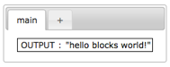
Abbildung
2: Hello World als Output
Für Ergebnisse, die uns interessieren,
braucht ein Programm von uns Ausgangswerte, die Input heißen. Bsp.: mit Gewicht und Größe als Input errechnet sich
der BMI[1].
Jeder Input benötigt Platz im Arbeitsspeicher für veränderliche (variable)
Werte. Eine Variablen-Deklaration legt
mit Zahl oder Text als Typ ausreichend Platz im Speicher für eine Variable fest
und vergibt ihr einen eindeutigen Namen. Der Blockbild-Editor verlangt
Startwerte[2]
(sog. default values) und ermöglicht Kommentare im Kontextmenü. Ergebnisse
berechnen wir mit Formeln und Variablen. Die Zuweisung (engl. assignment) weist eine Kopie vom Ergebnis einer
Variablen zu, oder anders formuliert, sie kopiert dessen Wert in den
Speicherplatz der Variablen.
Abbildung 1 umfasst mit Deklaration, Input, Zuweisung
und Output alle diese vier Anweisungen. Es deklariert die Variable tg als Zahl
mit 0 als Startwert, was für das Taschengeld steht. Anschließend fragt es den
Anwender nach einem Wert und speichert dessen Input, zB 40, in der Variablen tg.
Die Formel erhöht das Taschengeld um 25%, bevor der Output erfolgt, zB „du
bekommst 50€ monatlich“ (+ reiht Texte aneinander).
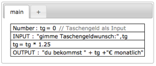
Abbildung
3: Reihenfolge von vier wichtigen
Blöcken
Fast jedes Programm verarbeitet Daten nach
dem sogenannten EVA-Prinzip: Eingabe – Verarbeitung – Ausgabe. Abbildung 4 fasst diese drei essentiellen Programmteile
mit Kommentaren (engl. comments) vor
den eigentlichen Anweisungen zusammen:
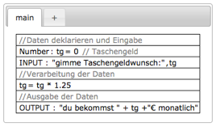
Abbildung
4: EVA-Prinzip als Kommentare
Ein Kommentar dient als Dokumentation dem
Verständnis für Programmierer und hat daher keinerlei Auswirkungen auf Daten
oder Ablauf des Programms. Anfänger sollen Kommentare nutzen, zB für das
EVA-Prinzip, um ein Programm zunächst grob zu gliedern bevor sie es
anschließend schrittweise verfeinern. Erfahrene Programmierer gehen selbst oft
so vor um Fehler zu vermeiden, allerdings in größeren Schritten.
Jedes Software-Programm folgt einem Algorithmus. Ein Algorithmus beschreibt
präzise die richtigen Anweisungen zur Lösung eines berechenbaren Problems. Er muss
ohne überflüssige Anweisung (engl. statement[3])
und oft nur mit folgenden Arten auskommen:
1.
Sequenz:
führt Anweisungen hintereinander aus
2.
Alternativen: führen entweder die einen oder die anderen Anweisungen
aus
3.
Iterationen: wiederholen Anweisungen mehrmals
In einem Blockbild stellen Blöcke die Anweisungen
eines Algorithmus dar und die Daten „fließen“ von oben nach unten. Dieses
single-entry/single-exit Prinzip gilt in Abbildung 3 für die Reihenfolge (Sequenz) von vier Blöcken.
Nach dem ersten Block steht Variable tg dem zweiten Block zur Verfügung. Der
Input im zweiten Block verändert tg, erhöht sich im dritten Block um 25% und
gibt den Ergebniswert im vierten Block aus. Wie wichtig bereits eine Sequenz sein
kann, führt als Beispiel der Besuch eines WCs vor Augen. Man stelle sich vor
was passiert, wenn man erst danach die Hose öffnet ;-)
Die Alternative IF führt Blöcke abhängig von einer Bedingung aus, oder eben nicht
aus:
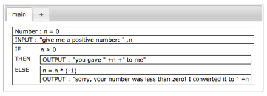
Abbildung
5: IF als Alternative
Ist die Bedingung (n > 0) erfüllt, so
führt dieser Block nur die Anweisung im THEN-Block aus. Andernfalls kommt nur der
ELSE-Block mit seinen zwei
Anweisungen zur Wirkung. Der optionale ELSE-Block lässt sich mit „delete“ über
das Kontextmenü entfernen. Ein fehlendes ELSE lässt sich wie jede Anweisung mit
drag’n drop wieder einbauen.
Die Beschreibung der Mehrweg-Alternative
SWITCH folgt später.
In unserem Fall wandelt der ELSE-Block
negative Werte von n in positive um. Die Variable links vom = der Zuweisung
muss typ-kompatibel zur Berechnung rechts davon sein. Steht also links eine
Number, so muss die Berechnung eine Number liefern, oder für einen Text links
muss die Berechnung rechts einen Text ergeben. Eine solche Berechnung heißt Ausdruck
(engl. expression) dessen Ergebniswert sich aus Variablen und Operatoren ergibt[4].
Der Blockbild-Editor kennt folgende Arten von Ausdrücken, die alle in Abbildung 4 vorkommen:
|
Art |
Ergebniswert |
zulässige Operatoren |
|
numerisch |
Number |
+, -, *, /, %, .. und Klammern |
|
logisch[5] |
boole’scher Wert |
&&, ||, !, >, >=, <,
<=, ==, != und Klammern |
|
Text |
Text |
+ für Konkatenation („aneinanderreihen“) |
Selbstverständlich unterstützt der
Blockbild-Editor die drei bekannten Iterationen für das wiederholte Ausführen
von Blöcken. WHILE wiederholt seinen
Block solange seine Laufbedingung gilt, während REPEAT-UNTIL seinen Block wiederholt bis seine Abbruchsbedingung
zutrifft. FOR wiederholt seinen
Block genau n Mal.
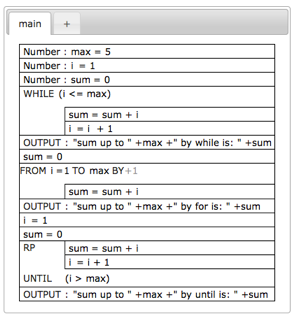
Abbildung 6: Arten von Iterationen
("Schleifen")
Ist die Laufbedingung von WHILE zu Beginn
nicht erfüllt, gibt es keine Ausführung des Blocks, aber ist diese immer
erfüllt, führt dass zu unendlich vielen Wiederholungen. REPEAT-UNTIL prüft die
Abbruchsbedingung erst nach der ersten Ausführung des Blocks, was mindestens
einen Durchlauf bedeutet. Aus der möglichen Anzahl an Wiederholungen des Blocks
ergibt sich die richtige Auswahl einer Iteration:
· WHILE: 0
bis beliebig vielen Wiederholungen
· REPEAT-UNTIL: 1 bis beliebig vielen Wiederholungen
· FOR: genau n Wiederholungen
Für jedes WHILE gibt es ein gleichwertiges
REPEAT indem man die Laufbedingung vom WHILE durch Negation in eine
Abbruchsbedingung für das REPEAT umwandelt. Der gleiche Trick klappt auch
umgekehrt. Folgendes Blockbild zeigt wie man mit WHILE und REPEAT-UNTIL jeweils
sicher stellt dass eine Zahl, zB eine Note, zwischen 1 und 5 liegt.
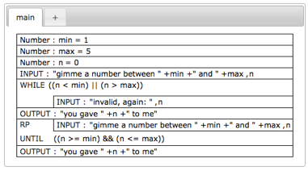
Abbildung 7: gleichwertige WHILE und REPEAT-UNTIL
Anweisungen
Abbildung 10 zeigt wie ein WHILE-Block einen IF-Block
„schachtelt“, also nutzt:
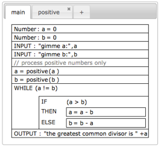
Abbildung
8: Euklid bestimmt den ggT zweier
positiver Zahlen
Die Stärke vom beliebigen „Schachteln“
(Kombinieren) der Blöcke macht sich der Blockbild-Editor zunutze. Er kommt
deshalb mit wenigen Arten von Anweisungen aus.
Mehrfach vorkommende oder ähnliche
Programmteile lagert man vernünftigerweise in Unterprogrammen aus. Man erspart
sich (viele) gleiche Blöcke. Ein Unterprogramm[6]
ist der Name eines Blocks, der ein Ergebnis liefern und Parameter haben kann. Abbildung 10 ruft das Unterprogramm „positive“ zweimal
auf. Das erste Mal übergibt es die Variable a als Parameter und weist das
Ergebnis von „positive“ der Variablen a zu. Beim zweiten Mal macht es das Gleiche
mit b. Abbildung 11 zeigt dieses Unterprogramm mit seiner
Signatur und Blöcken:
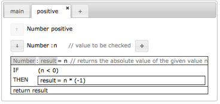
Abbildung
9: Unterprogramm positive stellt
einen Absolutwert für den Parameter n sicher
Eine Signatur beschreibt den Ergebnistyp,
den Namen und die Liste der Parameter eines Unterprogramms. Diese Kombination
muss eindeutig sein, sonst weiß man beim Aufruf nicht welches Unterprogramm zum
Einsatz kommt.
Entscheidend für Unterprogramme sind aussagekräftige
Namen und die Ergebnistypen. Sie legen deren Zwecke fest, zB dass „Number positive“
eine positive Zahl liefert. Bei Parametern gibt es drei Arten für das gerufene
Unterprogramm:
· Out-Parameter: liefert als Ergebnis die Kopie eines Wertes
· In-Parameter: erhält zum Bearbeiten eine Kopie (call by value)
· InOut-Parameter: erhält zum Bearbeiten das Original (call by reference)
Dementsprechend repräsentieren „Pfeile“ für
die Parameter im Unterprogramm die Arten Out, In oder InOut. Jeder Parameter
dient im Unterprogramm als Variable mit Typ und eindeutigem Namen. Der Name des
Ergebnisses – sofern das Unterprogramm einen retourniert – ist als „result“
fixiert, ebenso wie dessen Typ. Lediglich sein default value und Kommentar
lassen sich ändern.
Das Wiederverwenden (engl. re-use)
getesteter Programmteile erhöht die Qualität und anderseits reduziert es Zeit
sowie Kosten beim Entwickeln neuer Programme[7].
Deshalb unterstützt der Blockbild-Editor das Importieren von Unterprogrammen
über den Menüpunkt „Load“.
Call-by-reference Parameter zeigt der
Blockbild-Editor im simulierten stack kursiv an (siehe Abbildung 10). Es empfiehlt sich die (simulierten)
Speicheradressen über das „Configurations“ Menü einzuschalten.
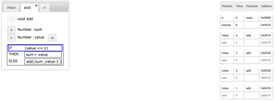
Abbildung
10: rekursiver Aufruf eines
Unterprogramms mit call-by-reference Parameter
Der Blockbild-Editor unterstützt Arrays
von Zahlen und Texten. Ein Array ist die Reihenfolge gleichartiger Elemente,
des sogenannten Basistyps.
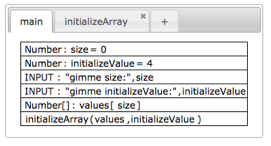
Abbildung 11: Deklaration von Arrays
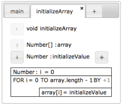
Abbildung 12: Arrays gehen stets per call-by-reference an Unterprogramme
Die Länge eines Arrays entscheidet sich
erst zur Laufzeit, unter Umständen hängt sie vom Input des Anwenders ab (siehe Abbildung 11). In Funktionen lässt sich die Länge
eines Arrays über deren „length“ abfragen (siehe Abbildung 12).
Blockbildeditor/pages/Examples/Example000_HelloWorld.bb
Blockbildeditor/pages/Examples/Example001_HelloWorld_with_Text.bb
Blockbildeditor/pages/Examples/Example002_IO.bb
Blockbildeditor/pages/Examples/Example003_If.bb
Blockbildeditor/pages/Examples/Example004_Loops.bb
Blockbildeditor/pages/Examples/Example005_Loops_RangeCheck.bb
Blockbildeditor/pages/Examples/Example006_Switch.bb
Blockbildeditor/pages/Examples/Example007_Loop_and_Function.bb
Blockbildeditor/pages/Examples/Example008_Euklid_with_Functions.bb
Blockbildeditor/pages/Examples/Example009_CallByReference.bb
Blockbildeditor/pages/Examples/Example009_RekursiveSumme.bb
Blockbildeditor/pages/Examples/Example010a_ArrayRuntimeLength.bb
Blockbildeditor/pages/Examples/Example010b_Arrays_DynamicLength.bb
[1] Ohne Input tut ein Programm was es will,
und ohne Output reagiert es auf nichts. Wer braucht so etwas? Ohne In- und
Output wären Programme sinnlos.
[2] Teste mit Play das Programm in Abbildung 3: was kommt raus, wenn der Anwender die Eingabe
abbricht? Golden rule für
Programmierer: verwende stets default values!
[3] Jede Anweisung einer Software befiehlt einer
Hardware etwas zu tun, zB einen Wert in der ALU berechnen, eine Datei auf der
Festplatte speichern, ein Photo aufnehmen, etc. Es fließt Strom, was Geld
kostet und Zeit dauert. Schnelle (effiziente) Algorithmen liefern richtige
(effektive) Ergebnisse ohne Energie oder Zeit zu verschwenden.
[4] Literale und Konstanten nicht vergessen ;-) Den
Zweck des Compilers erwähnen.
[5] auf short-circuit
condition evaluation hinweisen
[6] unabhängig vom Paradigma lässt sich der
Blockbild-Editor zum Erlernen funktionaler, prozeduraler, objekt-basierter und
objekt-orientierter Programmiersprachen einsetzen
[7] Eine namhafte Software-Factory
bezahlte Entwicklern re-use fähiger Teilen eine Provision. Jenen ,die solche
Teile nutzten, bezahlten sie aber ein Mehrfaches davon.